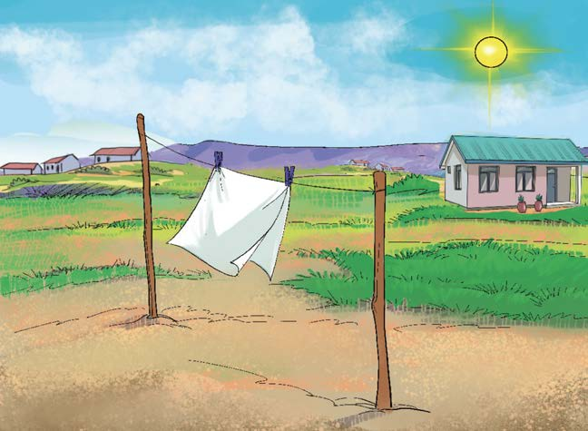

Experiment 4: Investigating transfer of heat in air
Aim:
To demonstrate transfer of heat in vacuum space
Materials:
A cloth, water, a clothesline, pegs and a basin
Procedure
1.
Fill the basin with water.
2.
Take a dry cloth and place it in the water. What does the cloth look like/feel like?
3.
Remove the cloth from the basin. Wring it out slightly, then hang it in the sun for one hour as shown/described in Figure 4.
4.
After an hour, remove the cloth and observe it. How does the cloth look like/feel like?

Results
The dry cloth became wet when placed in water. When the wet